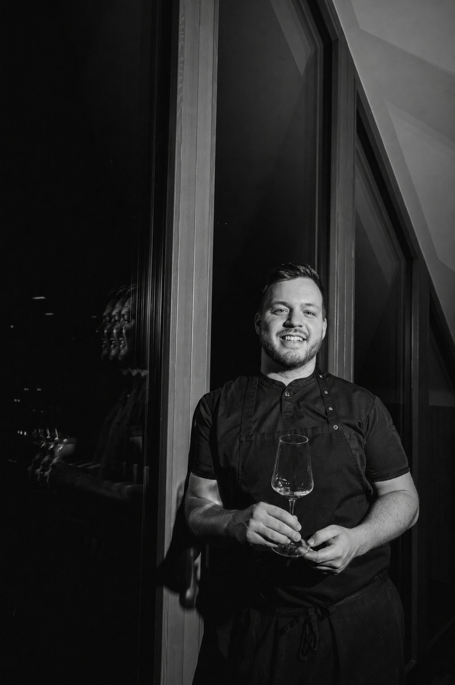

01
About the chef
Vojtěch is one of the most talented chefs of his generation and one of the most ambitious figures in Czech gastronomy. His goal is not only to cook excellent food, but to build a restaurant that can stand among the gastronomic destinations of Europe.
Every day is guided by one idea: to be better than yesterday. He studies techniques, looks to the best kitchens in the world and believes that excellence is built from thousands of small details guests may not name, but always feel.
